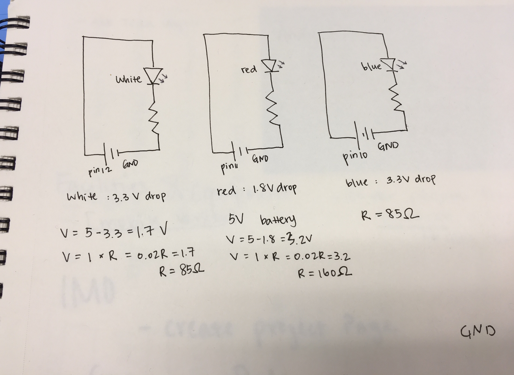

Assignment 1: Blink!
Here is all the documentation for Assignment 1!
The Schematic
 This drawing is the schematic of a white LED light, a red LED light and a blue LED light. Resisters are picked from the calculations above.The Circuit
This is the final set up for the circuit looping from pin10, pin11, pin12 to GND.The Code
// the setup function runs once when you press reset or power the board
int pin12 = 12;
int pin11 = 11;
int pin10 = 10;
void setup() {
// initialize digital pin LED_BUILTIN as an output.
pinMode(pin12, OUTPUT);
pinMode(pin11, OUTPUT);
pinMode(pin10, OUTPUT);
}
// the loop function runs over and over again forever
void loop() {
digitalWrite(pin12, HIGH); // turn the LED on (HIGH is the voltage level)
delay(500); // wait for half of a second
digitalWrite(pin12, LOW); // turn the LED off by making the voltage LOW
delay(500); // wait for half of a second
digitalWrite(pin11, LOW); // turn the LED off (LOW is the voltage level)
delay(500); // wait for half of a second
digitalWrite(pin11, HIGH); // turn the LED onn by making the voltage HIGH
delay(500); //wait for half of a second
digitalWrite(pin10, LOW); // turn the LED off (LOW is the voltage level)
delay(500); // wait for half of a second
digitalWrite(pin10, HIGH); // turn the LED on by making the voltage HIGH
delay(500); // wait for half of a second
}
The Operation of the Circuit
Below is a short demo of the circuit in operation.